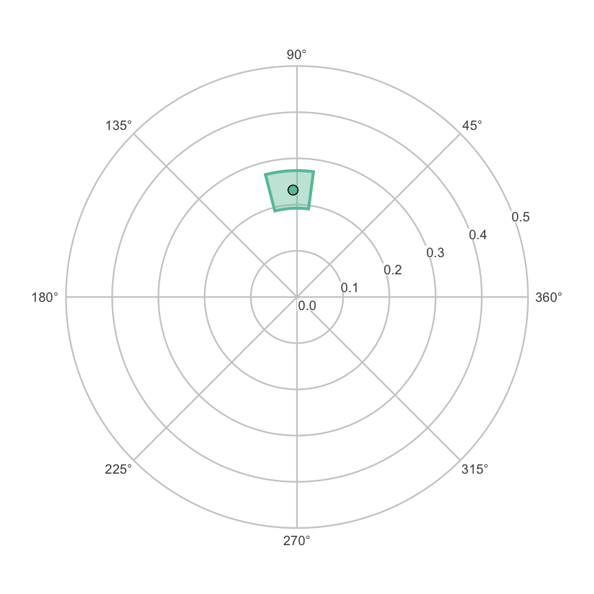

Level: Advanced. Read “Structure Tests and Ipsatization” first.
1. Overview
The other vignettes model observed circumplex scores. These
are the mean profile of a group, or the profile of correlations between
the circumplex scales and an external measure. This vignette introduces
a latent (not directly observed) counterpart, built on
a structural equation model (SEM) of the circumplex scales.
ssm_sem() and its helpers expose it. The method has two
products: the latent profile of a measure, and the invariance-gated
latent contrast between groups. This page teaches the first. It shows
how the profile’s confidence intervals are constructed, and the
assumptions that make them interpretable. The next page, “Latent Group
Contrasts”, teaches the second.
The latent-level Structural Summary Method appears to be new. A
search of the SEM–circumplex literature (2019 onward) found related work
on the latent structure of circumplex scales (e.g., Wendt et
al., 2019). It also found work on inference for disattenuated
correlations, which are correlations corrected for measurement error
(Moss, 2026). But it found no prior work applying the SSM decomposition
(elevation, amplitude, displacement, and fit) to a measure’s
latent profile with circular-aware intervals.
vignette("introduction-to-ssm-analysis") defines these four
parameters. Treat this layer as a research tool whose assumptions you
should understand before relying on it.
Section 2, “Why a latent SSM?”, explains attenuation. Section 3, “The
measurement model”, shows the lavaan model that
ssm_sem_syntax() writes. Section 4, “Estimating a latent
profile”, fits it with ssm_sem() and compares the latent
profile with the observed one. Section 5, “Where the confidence
intervals come from”, and Section 6, “What the parameters mean now”,
explain the intervals and the disattenuated parameters. The Wrap-up
lists what the page covered and names the next page, and the References
list the sources cited.
2. Why a latent SSM?
An observed correlation profile is attenuated by measurement error. Each circumplex scale is imperfectly reliable, so the correlations between the scales and an external measure are pulled toward zero. The scales are not equally reliable, so the correlations are pulled toward zero by different amounts. The observed SSM parameters inherit both effects. Amplitude is deflated by the average unreliability. Displacement is rotated by the heterogeneity of reliability around the circle.
The latent SSM estimates the profile that the measure would show against the latent circumplex content of the scales. This profile is the disattenuated analog of the observed correlation profile. Zimmermann and Wright (2017) defined the observed version, and this is its latent counterpart. The latent SSM fits a measurement model in which each scale loads on latent factors placed at that scale’s fixed theoretical angle. It then reads the measure’s correlations with the common circumplex content, and it summarizes them with the usual SSM transform.
Two consequences are worth stating up front, because they shape everything below:
- The latent profile is model-conditional. Every latent parameter is conditional on the fixed-angle measurement model being an adequate description of the data. A poorly fitting model does not make the latent parameters merely imprecise. It makes them uninterpretable. Global fit is therefore reported alongside every result.
- The angles are theoretical claims, not estimates.
ssm_sem()never estimates an angle. If an instrument’s real geometry departs from theory, that departure is absorbed into misfit, not into the angles. To examine circumplex geometry and let the angles be free, usecpm_fit(). It fits Browne’s (1992) circumplex model. Examining geometry is a different question, andcpm_fit()is a different tool.
3. The measurement model
ssm_sem() builds and fits a lavaan measurement model for
you, but it is worth seeing the model it generates.
ssm_sem_syntax() returns that model as a string:
scales <- c("PA", "BC", "DE", "FG", "HI", "JK", "LM", "NO")
syntax <- ssm_sem_syntax(scales = scales, angles = octants(), measures = "NARPD")
cat(syntax)
#> # circumplex SSM measurement model (generated by ssm_sem_syntax())
#> # scales: PA, BC, DE, FG, HI, JK, LM, NO
#> # angles (degrees): 90, 135, 180, 225, 270, 315, 360, 45
#> # model tier: scaled
#>
#> # general factor: free per-scale saturations
#> g =~ NA*PA + a1*PA + a2*BC + a3*DE + a4*FG + a5*HI + a6*JK + a7*LM + a8*NO
#> # circumplex plane: loadings free but with each scale's angle fixed
#> cx =~ NA*PA + lx1*PA + lx2*BC + lx3*DE + lx4*FG + lx5*HI + lx6*JK + lx7*LM + lx8*NO
#> cy =~ NA*PA + ly1*PA + ly2*BC + ly3*DE + ly4*FG + ly5*HI + ly6*JK + ly7*LM + ly8*NO
#> # fixed-angle direction constraints: sin(a)*lx - cos(a)*ly == 0
#> 0 == 1*lx1 - 0*ly1
#> 0 == 0.70710678118654757*lx2 - -0.70710678118654746*ly2
#> 0 == 0*lx3 - -1*ly3
#> 0 == -0.70710678118654746*lx4 - -0.70710678118654768*ly4
#> 0 == -1*lx5 - 0*ly5
#> 0 == -0.70710678118654768*lx6 - 0.70710678118654735*ly6
#> 0 == 0*lx7 - 1*ly7
#> 0 == 0.70710678118654746*lx8 - 0.70710678118654757*ly8
#> # isotropic orthonormal plane metric (plane scale absorbed by loadings)
#> g ~~ 1*g
#> cx ~~ 1*cx
#> cy ~~ 1*cy
#> cx ~~ 0*cy
#> # general-plane covariances fixed to zero: with free per-scale
#> # saturations, freeing these is locally unidentified exactly at
#> # phi_g = 0 (the trade a_i +/- d*c_i*cos/sin(angle_i) <-> phi_g is
#> # first-order flat there), so they cannot be estimated. To model a
#> # general factor leaning into the plane, use the strict tier, whose
#> # fixed loadings leave the full factor covariance matrix free.
#> g ~~ 0*cx
#> g ~~ 0*cy
#>
#> # external measure(s): related to circumplex factors
#> NARPD ~~ mg1*g
#> NARPD ~~ mcx1*cx
#> NARPD ~~ mcy1*cy
#>
#> # NOTE: amplitude (a) and displacement (d) are deliberately NOT defined
#> # here. They are nonlinear (sqrt / atan2) and their intervals must be
#> # built in-package through circular quantiles, never via lavaan := or
#> # delta-method CIs (which ignore the angular branch cut).Three latent factors carry the structure: a general factor
g and the two plane axes cx and
cy. Each scale loads on (has a weight on) all three. But
its plane loadings are tied to its fixed angle by a
direction constraint (sin(θ)·lx − cos(θ)·ly == 0). Here
lx and ly are the scale’s loadings on
cx and cy. So the scale’s location in the
plane is theoretical, while its saturation (how strongly it
expresses the circumplex) is free. This is the default
"scaled" tier, one of two versions of the
model. A stricter "strict" tier instead
fixes every loading to the unit cosine pattern and frees the full factor
covariance matrix. It is the fully theoretical benchmark. It is also
what remains identified (the data pin down its parameters) when the
number of scales is small.
The header and comments in the generated syntax record two design decisions that matter statistically:
- Under the scaled tier the general factor is fixed
orthogonal to the plane (
g ~~ 0*cx,g ~~ 0*cy). Freeing those covariances alongside free per-scale saturations is locally unidentified exactly at the null they would test. So they cannot be estimated in this tier. A general factor that leans into the plane is expressible only under the strict tier (or it surfaces as misfit under the scaled tier). This matters for real interpersonal data. Wendt et al. (2019) found a general–agency correlation of roughly −.3, replicated across four samples. So on instruments in the family of the Inventory of Interpersonal Problems (IIP), the orthogonality that the scaled tier assumes is known to be violated. - The final
NOTEsays that amplitude and displacement are deliberately not defined in the lavaan syntax. That is the subject of Section 5.
You rarely call ssm_sem_syntax() directly, because
ssm_sem() does. But it is the escape hatch for
respecifications that you then fit yourself and hand back through
ssm_sem_parameters(). One example is partial invariance,
where only some parameters are held equal across groups.
4. Estimating a latent profile
The everyday entry point is ssm_sem(). Its arguments
mirror ssm_analyze(): the data, the scales and
their angles, and one or more measures. The
measures argument is required in the single-group case,
because the single-group latent SSM is the correlation path. (A
single-group latent mean profile is not identified, so it is
not offered.)
Because the confidence intervals are simulated, set a seed immediately before the call for reproducibility.
data("jz2017")
set.seed(12345)
latent <- ssm_sem(
jz2017,
scales = scales,
angles = octants(),
measures = "NARPD",
boots = 500
)
latent
#>
#> # Latent (SEM-based) SSM
#>
#> Measurement model: scaled fixed-angle circumplex
#> Global fit (N = 1166, robust): chisq(17) = 300.546, p < 0.001
#> CFI = 0.93, RMSEA = 0.13, SRMR = 0.072
#>
#> # Profile [NARPD]:
#>
#> Estimate Lower CI Upper CI
#> Elevation 0.249 0.210 0.295
#> X-Value -0.009 -0.054 0.033
#> Y-Value 0.231 0.189 0.273
#> Amplitude 0.232 0.192 0.274
#> Displacement 92.132 82.515 104.461
#> Model Fit 0.975Compare this with the observed correlation profile of the same measure:
set.seed(12345)
observed <- ssm_analyze(
jz2017,
scales = scales,
angles = octants(),
measures = "NARPD"
)
observed
#>
#> # Profile [NARPD]:
#>
#> Estimate Lower CI Upper CI
#> Elevation 0.202 0.169 0.238
#> X-Value -0.062 -0.094 -0.029
#> Y-Value 0.179 0.145 0.213
#> Amplitude 0.189 0.154 0.227
#> Displacement 108.967 98.633 118.537
#> Model Fit 0.957The two profiles tell the same broad story: narcissistic PD (personality disorder) relates to the upper (dominant) region of the circumplex. But the disattenuated profile has a larger amplitude and a higher fit, and its displacement sits at a somewhat different angle. The amplitude increase is the removal of attenuation. The latent correlations are not pulled toward zero by scale unreliability. The displacement shift and the fit increase are the removal of reliability heterogeneity around the circle. (Section 6 explains why each moves.)
ssm_sem() returns a circumplex_ssm_sem
object, a subclass of the ordinary circumplex_ssm object,
so the familiar table and plot functions work on it:
ssm_plot_circle(latent)
ssm_table(latent, drop_xy = TRUE)| Profile | Elevation | Amplitude | Displacement | Fit |
|---|---|---|---|---|
| NARPD | 0.25 (0.21, 0.29) | 0.23 (0.19, 0.27) | 92.1 (82.5, 104.5) | 0.975 |
By default ssm_sem() fits with a robust estimator
(estimator = "MLR", maximum likelihood with robust
corrections) and reports robust global fit indices. This is because
circumplex scale scores are typically skewed, and the naive chi-square
over-rejects. The robust (sandwich) standard errors also feed the
confidence intervals. Section 5 explains why that matters.
5. Where the confidence intervals come from
Amplitude and displacement are nonlinear functions
of the model parameters: amplitude is a square root and displacement is
an atan2. lavaan can attach a delta-method (linear
approximation) or bootstrap-percentile interval to any derived quantity.
But for displacement those intervals are wrong in a way that is easy to
miss. atan2 has a branch cut, a place on the circle where
its output jumps by a full turn. A displacement near 0°/360° can produce
an interval that has been unwrapped across the cut, or whose endpoints
have sign-flipped. So a naive percentile interval straddling the
boundary points the wrong way around the circle.
circumplex therefore never delegates amplitude
or displacement intervals to lavaan, which is why the generated
syntax refuses to define them. Instead it reuses the same machinery that
the observed bootstrap uses:
- lavaan supplies only the point estimates and their covariance (or bootstrap replicates) of the model’s free parameters.
-
ssm_sem()draws from that covariance and maps each draw through the profile and the SSM transform. This gives a replicate of every SSM parameter. - Those replicates go through the package’s existing interval assembly. The elevation, X value, Y value and amplitude get percentile intervals. Displacement gets circular quantiles (centered on the circular mean, unwrapped, quantiled, and re-wrapped), with contrast intervals aligned to the estimate’s branch.
As a result, a latent displacement interval behaves correctly at the 0°/360° pole. It can straddle the boundary contiguously, and the point estimate always sits inside its own interval. This is the same architecture that the Monte Carlo engine uses for observed profiles, with lavaan supplying the mean and covariance rather than resampling.
Two engines feed step 2, selected by ci_method:
-
"mvn"(default): draw from a multivariate normal centered at the estimates, with the model’s (robust) covariance. It is fast: one model fit plus vectorized draws. -
"boot": refit the model on each bootstrap resample. This is far more expensive, but it does not lean on asymptotic normality.
The package’s design notes report a coverage study across constructed
populations. It found "mvn" well-calibrated at realistic
sample sizes when the covariance is the robust sandwich. That
is why robust SEs are the default. Under a misspecified fixed-angle
model, plain (non-robust) SEs undercovered displacement: their intervals
held the true displacement less often than nominal. The sandwich
restored nominal coverage. If you supply your own lavaan fit through
ssm_sem_parameters() and intend to use "mvn",
fit it with se = "robust.huber.white" so that the
propagated covariance stays valid.
6. What the parameters mean now
Disattenuation changes what two of the parameters mean. The vignette would be misleading if it did not say so.
Fit. Under the scaled tier the latent profile is not forced to be a perfect cosine, because the scales have different saturations. So a latent fit below 1 is informative. It measures how far the measure’s latent profile departs from a pure cosine wave. Differential saturation across scales drives that departure. Under the strict tier, anisotropy in the factor covariance (unequal spread in different directions) drives it too. What the latent fit removes, relative to the observed fit, is the contamination from reliability heterogeneity, not sampling error. As population quantities, the observed and the latent fit contain no sampling error at all. But their estimates at a finite sample size both remain noisy. So a latent fit of, say, .85 in a modest sample is not automatically substantive structure.
Displacement. Latent displacement is the
first-harmonic direction (the peak direction of the best-fitting cosine)
of the saturation-modulated disattenuated profile. It is
not simply “the measure’s angle in the latent space.”
Heterogeneous saturations around the circle, or a general factor leaning
into the plane, rotate it, exactly as they rotate the observed
displacement. Fit can stay high while this happens. The latent layer’s
contribution is the removal of the reliability modulation that
additionally rotates the observed displacement. It does not remove the
saturation modulation. The removal of the reliability modulation is why
the observed and latent displacements in Section 4 differ. This account,
with the reliability modulation removed and the saturation modulation
kept, is the honest description of what d estimates
here.
The interpretation aids you already know carry over unchanged.
Amplitude is the gate for interpreting displacement. When the amplitude
confidence interval’s lower bound sits too close to zero relative to its
width, the profile has no well-defined direction. Then the displacement
is not interpretable. The low-fit dashing on plots and the displacement
caution in print() behave exactly as they do for observed
profiles.
Wrap-up
The latent SSM corrects a measure’s circumplex profile for scale
unreliability, both its average level and its differences across scales.
ssm_sem() fits the measurement model, propagates its full
covariance into circular-aware intervals, and gates the latent group
contrast on measurement invariance. Every latent quantity is conditional
on the fixed-angle model, so read the global fit first. The next page to
read is “Latent Group Contrasts”. It covers group differences, the
invariance gate, the limitations of the method and its relation to the
literature.
References
Browne, M. W. (1992). Circumplex models for correlation matrices. Psychometrika, 57(4), 469–497.
Moss, J. (2026). Inference for disattenuated correlations. Applied Psychological Measurement. Advance online publication. https://doi.org/10.1177/01466216261440511
Wendt, L. P., Wright, A. G. C., Pilkonis, P. A., Nolte, T., Fonagy, P., Montague, P. R., Benecke, C., Krieger, T., & Zimmermann, J. (2019). The latent structure of interpersonal problems: Validity of dimensional, categorical, and hybrid models. Journal of Abnormal Psychology, 128(8), 823–839.
Zimmermann, J., & Wright, A. G. C. (2017). Beyond description in interpersonal construct validation: Methodological advances in the circumplex Structural Summary Approach. Assessment, 24(1), 3–23.